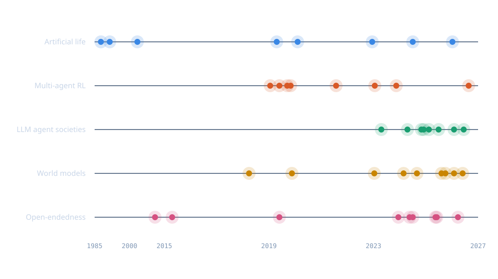

<section class="cover">
  <div class="grid"></div>
  <div class="inner">
    <div class="kicker">RESEARCH REPORT · SECOND EDITION</div>
    <h1>Running Persistent AI&nbsp;Worlds<span>Multi-agent simulations with progressive learning and emergent behaviour</span></h1>
    <div class="ed">10 OCTOBER 2026</div>
  </div>
  <div class="art"></div>
  <div class="foot">
    <div><b>COVERS</b><span class="covers">Open-endedness · artificial life · multi-agent learning · language-model societies · world models · continual learning · tooling and costs · safety and validity · two runnable simulations</span></div>
    <div><b>EDITION</b>Second; complete rewrite of February 2026</div>
    <div><b>SOURCES</b>{NREFS} numbered references</div>
    <div><b>PREPARED FOR</b>Nerds489</div>
  </div>
</section>
